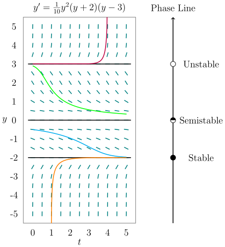
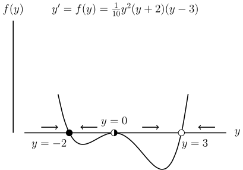

Table of Contents
Differential Equations

NARROW DISPLAY WARNING
You are most likely using a tablet or mobile device in portrait orientation. This website is best viewed using a typical computer screen with the browser window maximized.
Viewing this website in portrait orientation can cause problems with equations being longer than the screen width (you can scroll to the right), images being poorly sized, and the font size of maths text being much smaller than regular text. If your only option is a tablet or mobile device, your viewing experience will be better if you view this website in landscape orientation. You might need to refresh the page to fix any problems after rotating.
First order ordinary differential equations that are autonomous can have equilibria points where a constant value is a solution to the differential equation. The long term behaviour of solutions to the ODE can be determined by drawing a phase line and analysing the stability of the equilibrium points. Equilibrium points can be stable, unstable, or semistable.
An autonomous first order ODE is when $y'(t)$ is only dependent on $y(t)$ and $t$ does not explicitly appear in the ODE.
Examples of autonomous ODEs are,
\begin{equation} y'=y+3 \qquad y' = y^{2} \qquad y'=y(4-y) \qquad y'=f(y) \end{equation}An equilibrium point is a value of $y$ that makes $y' = 0$. That constant value of $y$ will be a solution of of the ODE. The value of $y$ will neither increase nor decrease, hence the name equilibrium point.
| ODE | Equilibria |
|---|---|
| $y'=y+3$ | $y=-3$ |
| $y' = y^{2}$ | $y=0$ |
| $y'=y(4-y)$ | $y=0,4$ |
| $y'=f(y)$ | All $y$ values where $f(y)=0$ |
Equilibria of an autonomous first order ODE also have a stability type. An equilibrium point can be stable, unstable, or semistable.
In this example, the equilibrium point $y=3$ is unstable because all nearby solutions diverge away from $y=3$. The equilibrium point $y=0$ is semistable because all nearby solutions above $y=0$ converge to $y=0$ and all solution below $y=0$ diverge from $y=0$. The equilibrium point $y=-2$ is stable because all nearby solutions converge towards $y=-2$.
Another way to determine stability is to plot $y'=f(y)$ versus $y$.
Find the equilibria and determine the stability of the autonomous ODE.
\begin{equation} y' = 4-y \end{equation}Find the equilibria and determine the stability of the autonomous ODE.
\begin{equation} y' = (y-2)(y+5) \end{equation}Find the equilibria and determine the stability of the autonomous ODE.
\begin{equation} y' = (y+1)^{2}(y-6) \end{equation}Find the equilibria and determine the stability of the autonomous ODE.
\begin{equation} y' = (y+1)(y+2)(y+3) \end{equation}Find the equilibria and determine the stability of the autonomous ODE.
\begin{equation} y' = y^{3}(y-2)^{2}(y-3)^{3} \end{equation}